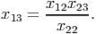
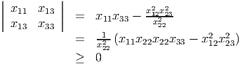
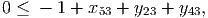
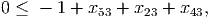
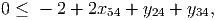
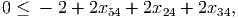

Solution:
The problem is
In the tree below, the optimal value of a node is denoted by z* and the optimal solution to the LP relaxation is denoted x*.

The process found four integer solutions. The optimal solution is the best of these, namely x* = (1, 0, 0, 1) with value 44.
Solution:
Given a feasible solution to the partitioning problem, define the n × k matrix with
and set = T , so ≽ 0. Note that
since each vertex is in exactly one set. Further,
Thus, is feasible in the given SDP.
Now we examine the objective function value. We have
Note that
and so the objective function value is equal to the value of the partition. Hence the SDP is a relaxation of the partition problem.
Assume X is symmetric. Assume the 2 × 2 submatrices
are positive semidefinite. Show that x13 can be chosen so that X is positive semidefinite. (This result can be generalized to allow an approach to solving semidefinite programs that exploits sparsity. The approach involves looking at cliques in chordal graphs.)
Solution:
We need to be able to choose x13 so that the following (sub)determinants are nonnegative:
and
We break into cases based on the value of x22, which must be nonnegative:
- If x22 = 0: Then we must have x12 = x23 = 0 for the subdeterminants of the given two 2 × 2 matrices to be nonnegative. We can then choose x13 = 0 and we get X ≽ 0.
- If x22 > 0: We choose x13 to maximize det(X). It is maximized when
 With this choice, we get

since the given 2 × 2 submatrices are positive semidefinite.
With this choice, we also get
 since x11x22 ≥ x122 ≥ 0 and x 22x33 ≥ x232 ≥ 0.
Thus, we can always choose x13 to ensure X ≽ 0.
Solution:
Solution to initial LP relaxation of the fixed charge network flow problem (4.1) on page 496 of the text is
The generalized flow cover inequalities are given in equation (4.5) on page 499 of the text. Possible inequalities include:
- For node 3: Have b = -1. Take C+ = ∅, C- = ∅, L = {(5, 3)}, N- \ L =
{(2, 3), (4, 3)}.
We then get λ = ∑ e∈C+ue - b = 1 > 0. The constraint is
 which is violated by the solution to the LP relaxation.
- For node 3: Have b = -1. Take C+ = ∅, C- = ∅, L = {(5, 3), (2, 3), (4, 3)},
N-\ L = ∅.
We then get λ = ∑ e∈C+ue - b = 1 > 0. The constraint is
 which is violated by the solution to the LP relaxation.
- For node 4: Have b = -2. Take C+ = ∅, C- = ∅, L = {(5, 4)}, N-\L = {(2, 4), (3, 4)}.
We then get λ = ∑ e∈C+ue - b = 2 > 0. The constraint is
 which is violated by the solution to the LP relaxation.
- For node 4: Have b = -2. Take C+ = ∅, C- = ∅, L = {(5, 4), (2, 4), (2, 4)},
N-\ L = ∅.
We then get λ = ∑ e∈C+ue - b = 2 > 0. The constraint is
 which is violated by the solution to the LP relaxation.
Similar inequalities can also be constructed using the formulation in the notes, where b now represents net demand. In this notation, the incoming arcs are C1 and the outgoing arcs are C2.
For example: At node 3, we have b = 1. We take C1 = {(5, 3)}, C2 = ∅, L2 = {(3, 4), (3, 5), (3, 2)}. We have λ = u53 - b = 2, so u53 - λ = 1. The constraint is
which is violated by the solution to the LP relaxation.
At node 4, we have b = 2. We take C1 = {(5, 4)}, C2 = ∅, L2 = {(4, 3), (4, 5), (4, 2)}. We have λ = u54 - b = 1, so u54 - λ = 2. The constraint is
which is violated by the solution to the LP relaxation.
Solution:
If X12 = 0 then we can take
If X12 > 0 then both X11 > 0 and X22 > 0. We can take W to be the Cholesky factor of X:
From the assumptions, all the entries of W are well-defined and nonnegative.